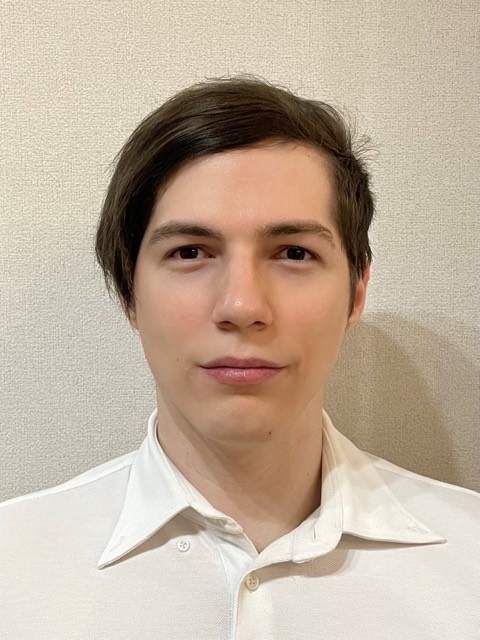

Marco Mollinetti
AI Division Manager, Nohara Group (Japan)
Marco leads BelemConverse. He runs the AI division at the Nohara Group, a Japanese construction company in its fourth century, where a team of three to five — three of them PhDs — carries nine concurrent projects across Japan, Singapore and Indonesia. The work runs from a constraint-programming and vision engine for gypsum board nesting to an OCR pipeline that reads six required fields off handwritten delivery faxes, alongside the group’s AI governance frameworks and its reskilling programmes.
He arrived there through research and engineering rather than around them. A Ph.D. in Systems Engineering from the University of Tsukuba, on deterministic methods for non-deterministic optimisation. A postdoc at CENSIPAM on autonomous oil-spill and vessel detection. Production work at Plimes on cough and swallow recognition, and at MTI on container scheduling across Japan, Vietnam and Singapore and on rain forecasting for aviation maps. As a research fellow at Lab-TeC he won a $200,000 CNPq grant to study lightning detection in the Amazon, with UFPA and the University of Arizona.
Belém is not a case study for him. He took his bachelor’s degree at the University Centre of Pará, finished first in his class, and still gives guest lectures on applied AI and optimisation at CESUPA. The city this system indexes is one he knows.